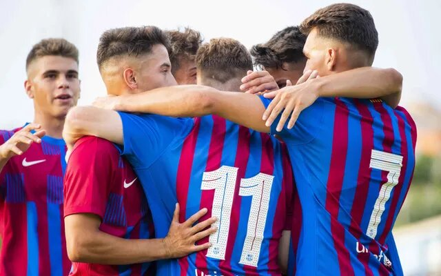

Short information
Futbol Club Barcelona, commonly referred to as Barcelona and colloquially known as Barça, is a Spanish professional football club based in Barcelona, Spain, that competes in La Liga, the top flight of Spanish football.
Founded in 1899 by a group of Swiss, Spanish, and English footballers led by Joan Gamper, the club has become a symbol of Catalan culture and Catalanism, hence the motto "Més que un club" ("More than a club"). Unlike many other football clubs, the supporters own and operate Barcelona. It is the fourth-most valuable sports team in the world, worth $4.06 billion, and the world's richest football club in terms of revenue, with an annual turnover of €840.8 million. The official Barcelona anthem is the "Cant del Barça", written by Jaume Picas and Josep Maria Espinàs. Barcelona traditionally play in dark shades of blue and red stripes, leading to the nickname Blaugrana.
Know us better
Our posts
L'Escala 0-3 FC Barcelona B: Promising start under new coach Sergi Barjuan
The preseason campaign for Barça B under new coach Sergi Barjuan is under way. The former Barça player looked on and must have been impressed with the way his team controlled the game in the 3-0 win over L'Escala which begins the season for the B squad.
Attacking intentions from the start
From the start in the Nou Miramar stadium, Sergi Barjuan's team took the initiative. Peque was the first to find the net after just 11 minutes of the game. That effort was soon followed by goals from the Japanese winger Hiroki Abe and Jutglà before half time. All three goals came thanks to working the ball out wide and playing dangerous balls into the box.
Barça B dominated possession and keeper Arnau Tenas was only called into action once in the opening 45 minutes to make a save from Henry.
More chances in the second half
After the break more chances came Barça's way but they were unable to add to their 3-0 lead. L'Escala tested second half keeper Carevic but were unable to get on the scoresheet. The blaugranes closed out the win and now look forward to their next preseason fixture against Fundació Esportiva Grama on 29 July.

Ferrao shortlisted for UEFA Goal of the Season
Brazilian is the only Barça nominee, and also the only futsal player, for his amazing volley against Dobovec
Ferrao’s extraordinary volley in the quarter finals of the UEFA Futsal Champions League last April has been named among the candidates to win the 2020/21 UEFA Goal of Year.
2020/21 UEFA Goal of Year.
The Brazilian’s finish is the only Barça goal among the ten nominees, and also the sole representative of futsal as opposed to the 11-a-side variant.
The other candidates are Dele Alli (Tottenham), Insigne (Italy), Pogba (France), Wirtz (Germany), Paulinho (Braga), Zadrazil (Bayern Munich), Schick (Czech Republic), Roofe (Rangers) and Taremi (Oporto).
2-0
The goal was scored against Dobovec following a delightful service from Marcenio. Ferrao connected with the ball perfectly and slammed in a strike that was as beautiful as it was unstoppable. Barça went on to win that game 2-0.
Voting is now open via the UEFA official website, so make sure you cast your vote for the Barça futsal star too!
Best players
Leo Messi is the best player in the world. Technically perfect, he brings together unselfishness, pace, composure and goals to make him number one.
Leo Messi's footballing career started in 1995 at Newell's Old Boys, where he played until the year 2000. At the age of 13, Lionel Messi crossed the Atlantic to try his luck in Barcelona, and joined the Under 14s. Messi made spectacular progress at each of the different age levels, climbing through the ranks to Barça C, followed by Barça B and the first team in record time.
Read more in official websiteConsidered one of the best centre halves in the world, Gerard Piqué brings together character, class and strength in the air at centre back, something that has made him a key figure in the Barça team
Marc-André ter Stegen signed for FC Barcelona in the summer of 2014 from Borussia Mönchengladbach. Born on 30 April 1992 in Mönchengladbach itself, the German did not take long to make his name as one Europe’s most promising young goalkeepers.
Read more in official website
Ter Stegen has been playing at the top level of the game since the age of 19. Excellent with the ball at his feet, he is a player for the present and the future
Gerard Piqué returned to FC Barcelona, the club where he started out as a youngster, in the summer of 2008, after three seasons with Manchester United and one on loan with Real Zaragoza.
Read more in official websiteCommon Matches
| 1st Team | 2nd Team | Date |
|---|---|---|
| VfB Stuttgart | Barcelona | 31 Jul |
| Salzburg | Barseelona | 4 Aug |
| Barcelona | Juventus | 9 Aug |
| Barcelona | Real Sociedad | 16 Aug |
| Barcelona | Manchester City | 19 Aug |
| Athletic Bilbao | Barcelona | 22 Aug |